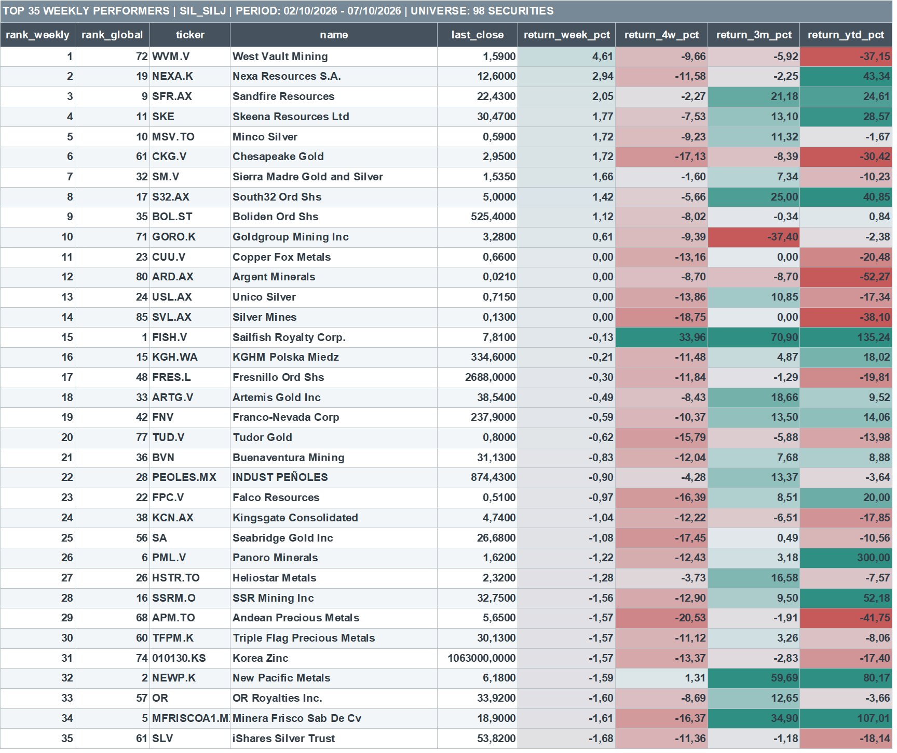
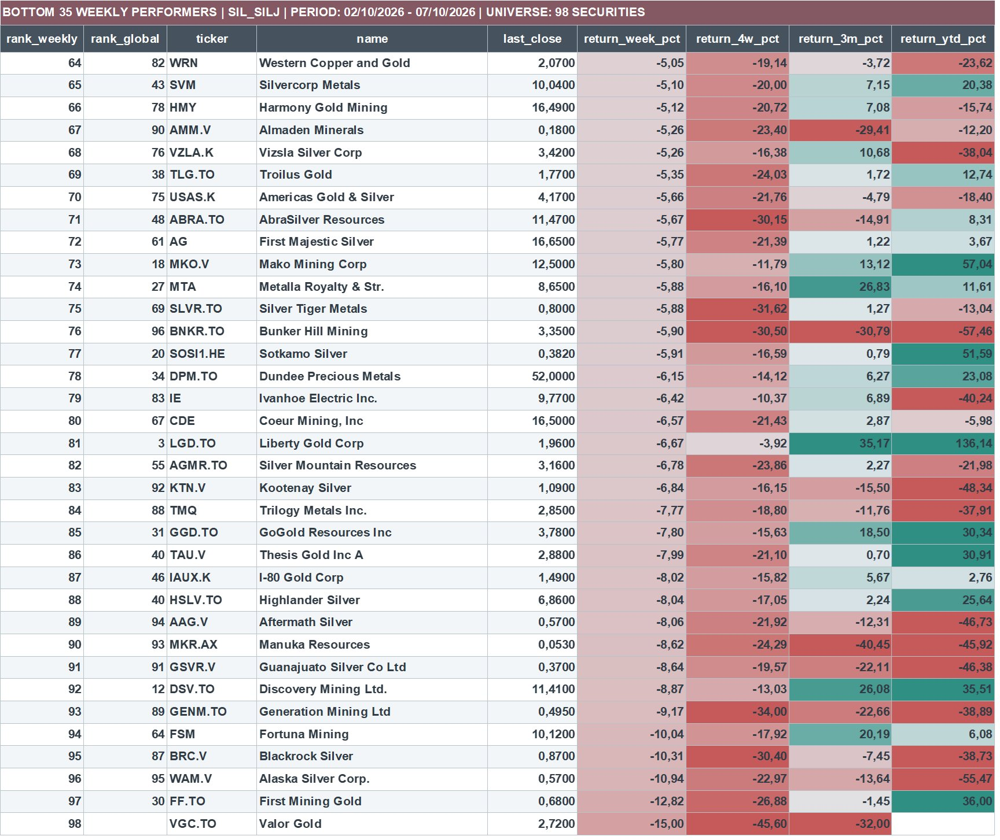
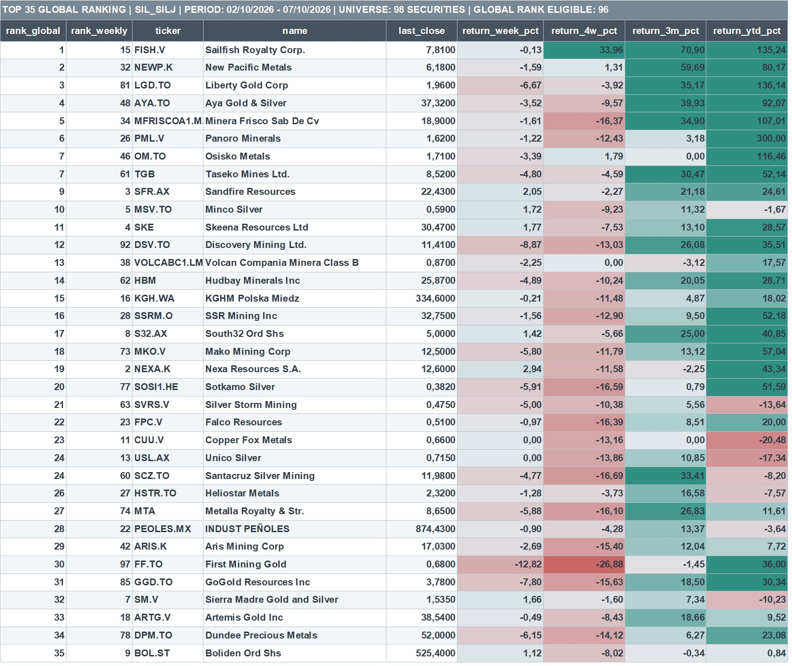
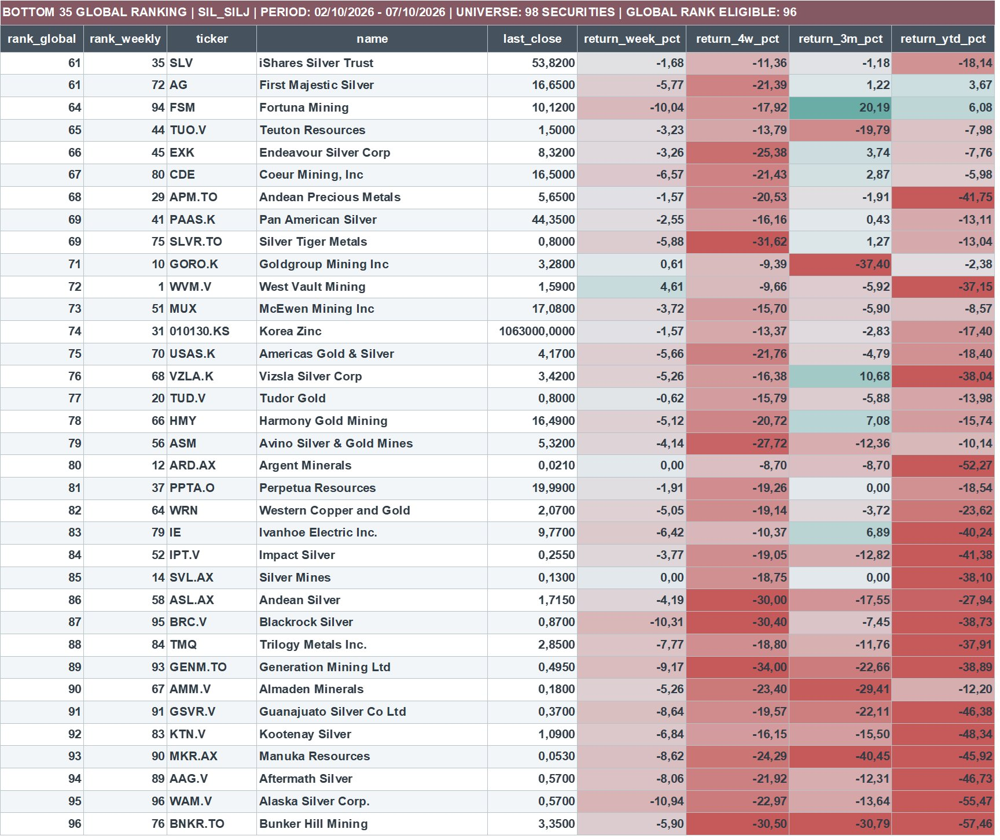

The main finding
Silver mining stocks have experienced substantial technical deterioration in a remarkably short period. Only 27.8% of the universe trades above its 200-day moving average, and the median drawdown has reached −35.8%. Yet an intraday observation on October 8 suggests a possible change in behavior: miners are posting modest gains while silver declines by approximately 1.7%.
This is a tentative observation, not a confirmed bottom. Breadth and volume indicators from the October 7 close do not yet validate a broad-based recovery.
A deep and widespread correction
The past several weeks have been particularly difficult for investors in silver mining stocks. What initially looked like a relatively normal correction within a broader bull market has developed into widespread deterioration, affecting both major producers and many smaller mining companies.
The updated quantitative study covers 98 companies and instruments in the SIL–SILJ universe, using data through the October 7 close. In late August, most constituents still maintained relatively healthy technical structures. Since then, market breadth has collapsed, leaving only 27.8% above their 200-day moving averages.
The weakness is not confined to a handful of laggards. More than half of the universe now trades more than 30% below its 52-week highs. The median drawdown has reached −35.8%, among the five worst readings in a historical sample of 49 observations.
Volume has not confirmed a lasting low
Volume data indicates that selling pressure has not yet disappeared. The median 20-day volume balance remains near the weakest levels of the sample, while trading activity continues below normal levels. The available evidence does not confirm that a durable low is in place.
A possible change in behavior
There is, however, an intraday development worth monitoring. On October 8, silver is falling approximately 1.7% while mining stocks are posting modest gains. During much of the correction, declines in the metal were often accompanied by even steeper losses across miners.
Could miners be starting to anticipate stabilization in silver prices? Possibly. Stabilization after a prolonged decline need not begin with an explosive rally; it may first appear as smaller losses, less sensitivity to a falling metal price, or isolated pockets of relative strength.
What would strengthen the case for a turn?
It remains too early to confirm a reversal. The data through October 7 does not show a broad recovery in breadth or sufficiently strong buying volume. Any improvement needs to persist over subsequent sessions and extend to a growing number of companies.
The correction is deep, prolonged, and extraordinarily widespread, but that alone does not establish that the broader bull market in silver miners has ended. The critical question is when the sector's internal structure begins to change. The first clue may emerge from the behavior of the mining stocks rather than silver itself.
Complete SIL–SILJ ranking — all 98 securities
Loading all 98 companies…
Download the original study and datasets
The Excel workbook is the original full scanner export. CSV and JSON provide the online nine-column ranking extract.
Original ranking images








Methodology and data notes
The rankings reproduce the underlying scanner workbook for October 2–7, 2026. Weekly ranking covers all 98 securities; global ranking is available for 96. Numeric return figures are rounded to two decimals for online display. The company universe reflects the scanner's SIL–SILJ selection and may include related ETFs, metals and diversified mining names rather than exclusively pure-play silver miners.
Time distinction: quantitative breadth, drawdown and volume indicators refer to the October 7 closing snapshot. The observation of silver falling approximately 1.7% while miners were rising was intraday on October 8 and is not reflected in the ranking table.
Security histories and relative rankings can be affected by missing data, different market calendars, corporate actions, price adjustments and the length of available trading records. Independent quantitative research; not investment advice.
Study page views: 
Structural Alpha · Independent quantitative research · Return to research archive